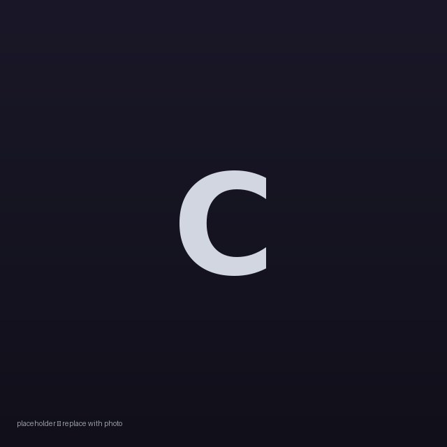
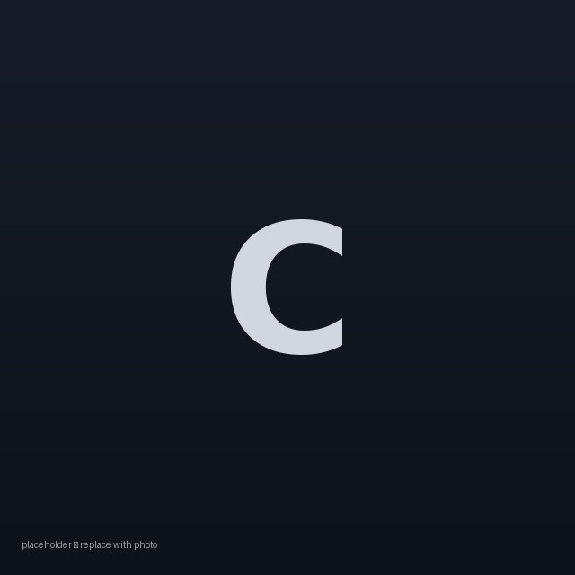

Lunate
The founders
Lunate is building the communications relay layer for the Moon’s south pole — the elliptical, apolune-dwelling orbits that keep a lander or a rover in constant contact with Earth, no matter where the mission sets down.

Caroline
Co-founder
Works on Lunate’s orbit design and mission analysis — the part that decides where the constellation flies and proves it stays there.

Caleb
Co-founder
Builds the software and ground systems that turn an orbit design into a service missions can actually call.